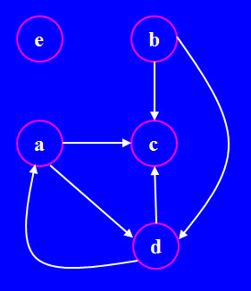
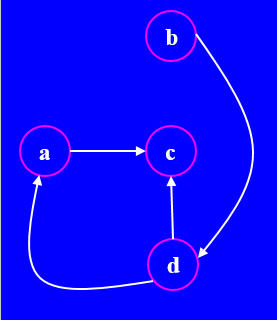
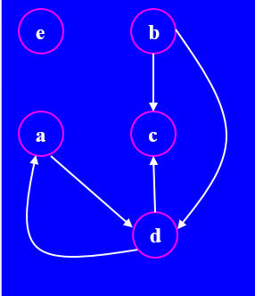
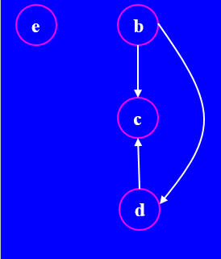

This in-lab programming exam is worth a total of 100 points. It requires you to write a class that overloads some arithmetic and relational operators, as well other double-underscore methods: for example __iter__, __getitem__, and __call__. You will have approximately 90 minutes to work on the exam, after logging in and setting up your computer (I estimate that taking about 10 minutes) and reading these instructions carefully (I estimate that taking about 10 minutes: don't rush); you may write on/annotate these pages. Finally, write, test, and debug the methods in your class; write these methods in the order given. I have designed these methods so that none are necessary in the writing of later methods, although sometimes using previously written methods (if you wrote them correctly) can simplify the code.
We will test your methods only for correctness, using a bsc.txt file, a variant of the one included in the project download. This means that your methods must define exactly the parameters specified in the descriptions below and must work on all the example arguments; your methods should also work on any other correct arguments too. Each method will be tested independantly of the others. To aid your writing and debugging of these methods
You may use any functions in the standard Python library as well as in the goody and prompt modules (which will be included in the project file you will download). Documentation for the Python standard library and these modules will be available during the exam. I have written all the standard import statements that I needed in the module in which you will write your methods; feel free to include other imports, or change the form of the included imports to be simpler to use.
If you are having problems with the operating system (logging on, downloading the correct files, accessing the Python documentation, submitting your work) or Eclipse (starting it, setting it up for Python, running Python scripts, running the Eclipse debugger, turning on line numbers) please talk to the staff as soon as possible. We are trying to test only your programming ability, so we will help you with these other activities. But we cannot help you understand, test, or debug your programming errors.
You should have a good understanding of the solution to Programming Assignments #1-#2 (in #1, pay close attention to Part 1 and Part 3); you should also have a good understanding of the material on Quiz #3 and Questions 1, 3, 4, and 5 on the Midterm exam. The problem may involve using any of the standard Python data types: dict, list, tuple, and set. You may need to know how to iterate over the keys, values, and items of dictionaries (possibly in a sorted order). You may need to use *args as a parameter specification, to match any number of positional (non-named) arguments in a function call. You may need to read input files. You may need to know how to call the functions/methods all, any; min, max, sum; join, split; sort, sorted; enumerate, zip. Finally, you may need to be able to write __iter__ using a generator. You are free to use or avoid various Python language features (e.g., lambdas or comprehensions): do what is easiest for you, because we are grading only on whether your functions work correctly.
The Graph class is defined in the graph.py module. The Graph class represents a graph consisting of nodes and directed edges. Each node is a str, depicted in a circle. Each edge is depicted as an arrow that connects its origin node (at the tail) to its destination node (at the head).
Examine the following graph.

Note that some nodes are purely origin nodes with only outgoing edges (b); some nodes are purely destination nodes with only incoming edges (c); some nodes are both (a and d); and some nodes are neither (e).
We represent a Graph as a dict that stores every node in
the graph as a key; each key node is associated with a
2-list that consists of two sets: the first set
contains all the destination nodes that the key node points to
(using outgoing edges from the key node); the second set
contains the origin nodes that point to that key node (using
the incoming edges to the key node).
So, the Graph pictured above is represented by the following dict.
{'a': [{'c','d'}, {'d'} ],
'b': [{'c','d'}, set() ],
'c': [set(), {'a','b','d'}],
'd': [{'a','c'}, {'a','b'} ],
'e': [set(), set() ]}
Recall that set() is an empty set (whereas {} is the empty dict). Of course, this information would print on one line, and because its data structures are dicts and sets, their keys/value items can appear in any order.
For example, if g refers to the original Graph above, then
g['a'] = 'b' would result in the following edges dict
{'a': [{'b','c','d'}, {'d'} ],
'b': [{'c','d'}, {'a'} ],
'c': [set(), {'a','b','d'}],
'd': [{'a','c'}, {'a','b'} ],
'e': [set(), set() ]}
Note that key node a's outgoing edge set now includes
node b and key node b's incoming edge set now includes
node a.
For example, if g refers to the original Graph above, then g['a'] returns {'c','d'}. Also, g['a','c'] returns True and g['a','e'] returns False.
Note that writing g['a','c'] is the same as writing g[('a','c')]: Python turns the 'a','c' in the [] brackets into a 2-tuple.
For example, if g refers to the original Graph above, then g('d') returns {'a','b'}; g('x') raises an exception.
Note how () differs from []: g('d') returns {'a','b'} treating 'd' as a destination node, returning its origin node set. But g['d'] (using __getitem__) returns {'a','c'}, treating 'd' as an origin node, returning its destination node set.
For example, if g refers to the original Graph above, then g.degree('a') returns 3; g.degree('b') returns 2; g.degree('c') returns 3; g.degree('d') returns 4; and g.degree('e') returns 0.
This method never raises an exception.
For example, if g refers to the original Graph above, then 'a' in g returns True, but 'x' in g returns False; also, ('a','b') in g returns False, but ('a','c') in g returns True.
For example, iterating over the original Graph above produces 6 values in the following order: ('b', 'c'), ('b', 'd'), ('a', 'c'), ('a', 'd'), ('d', 'a'), and ('d', 'c'). This is the ordering, because node b has degree 2, so it and its two destination nodes, appearing alphabetically, are first; node a has degree 3, so it and its two destination nodes, appearing alphabetically, are next; and finally node d has degree 4, so it and its two destination nodes, appearing alphabetically, are last.
Trivially, for any Graph g, g <= g evaluates to True.
For example, the Graph below on the left is a subgraph of the Graph below on the right: every node and edge in the left Graph appears in the right Graph, which also has one more node and two more edges.

IMPORTANT: The following method is worth just 1 extra credit point. Do not solve it unless you have correctly written all the other methods, which are worth many more points. I included this problem to test the programming speed/ability of the more advanced students.
For example, if g (below on the left) refers to the original Graph above, then del g['a','e'] would do nothing (there is no edge from a to e), but del g['a','c'] would change the graph to the one below on the right, by deleting the edge going from the origin node a to the destination node c.

The edges dict of g would now be
{'a': [{'d'}, {'d'} ],
'b': [{'c','d'}, set() ],
'c': [set(), {'b','d'}],
'd': [{'a','c'}, {'a','b'}],
'e': [set(), set() ]}
The result of __delitem__ is that the node specified by the item parameter does not appear anywhere in the Graph: not as a key node and nowhere in the sets.
For example, if g (below on the left) refers to the original Graph above, then del g['x'] would do nothing (there is no node x), but del g['a'] would change the graph to the one below on the right, by deleting the node a and all edges including that node.

The edges dict of g would now be
{'b': [{'c','d'}, set() ],
'c': [set(), {'b','d'}],
'd': [{'c'}, {'b'} ],
'e': [set(), set() ]}